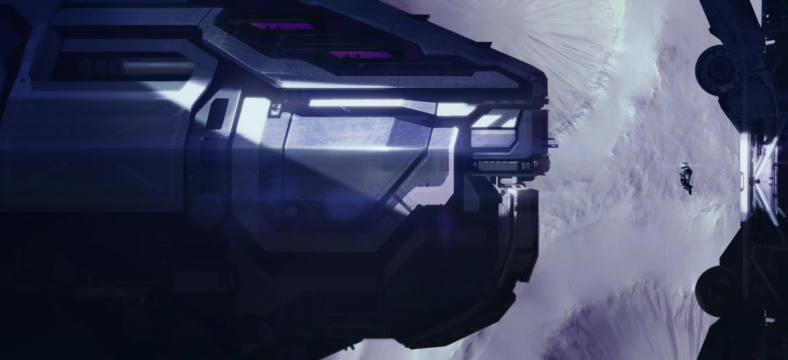
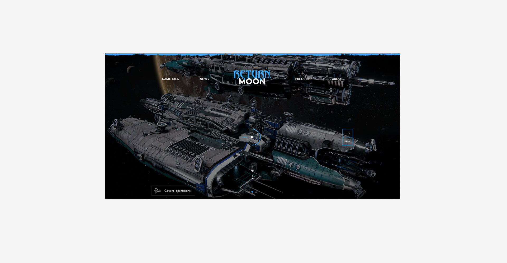
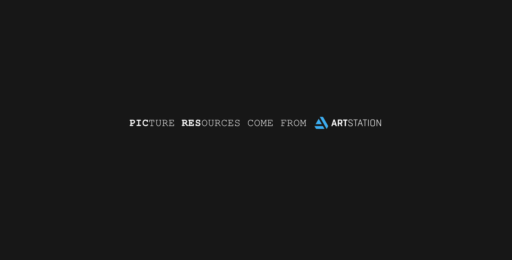

RETURN MOON
一个奇思妙想的脑洞产品DEMO 并没有用于实际项目当中
重返月球
这是一个游戏服务站点Demo，这个想法来自一个晚上的脑洞。想想都很吐血⊙﹏⊙‖∣°
这是在一个设计讨论会上，大家都说着这样的站点那样的应用，而我在想着一个剧情故事。直到讨论会结束回到宿舍躺在床上我还在想着这个事情，最后翻来覆去睡不着，索性起来把这个故事给写出来。。
站点构思，交互/视觉设计。
(2016.04 - 2016.05）
Story Prospect
时间在2100年，人们在地球的水资源已经不能满足所有人生存，地球人所剩无几。人们在向外探索时发现了一个比地球大十倍的星球-蓝特星球(这里边的名字和人物名字都是YY的😂)，其资源很符合人们的生存需求，在对其开发过后人们决定迁移至蓝特星球，地球是我们的家园人们对它已经有了深深的感情，一些人愿意离开一些人却愿意随它生死(就是因为种种原因有的离不开了，就像很多科幻大片里边叙述的那样)。就这样一部分人留在了地球使用着仅存的水资源。然而故事就发生在这里...
故事当然少不了外星人的破坏，在离蓝特星球不远的地方有一个艾丑特星球，上面居住着丑特人，他们发现蓝特星球上有地球人，就随着足迹找到了地球，他们发现地球资源很适合他们的机械燃料和机械制造，于是就准备把地球吸食干净用地球的资源来铸造飞船然后再去攻打蓝特星球将地球人移为奴隶，他们在月球上建立了吸食基站，主人公Mary Jovino在开着飞船出去时发现了丑特人的得知了这个消息，回到蓝特星球告诉了总统，总统不相信却认为自己已经得到了比地球大十倍的蓝特星球，地球的存亡已经无所谓了，人类刚到一个新居不能为了地球和丑特人开战。
为了救居住在地球上人类Mary Jovino与丑特人开始了战斗，在返回地球的时候Mary Jovino爱上了女主人公Ann，安妮是和家人居住在地球，得知丑特人要摧毁地球，便和地球上剩余的人类加入了这次战争，他们利用地球上留下的几十年前的飞行设备与月球上丑特人开始了战斗，题名(RETURN MOON)重返月球，寓意摧毁丑特人月球基站保护地球。然而在这次战斗开始后，便激活了蓝特星球的人类与丑特人的战争，所以后续不管是游戏开发还是电影都是很有意思的。
- 
Web UI/UX Design
(YY完了之后发现这款游戏我们也实现不了，如此激情 还是把这款游戏的服务站点设计出来吧|迷之尴尬😝)
站点的基础框架构思是这样的
Initial Process
在整理好站点的框架结构后，开始着手交互视觉稿的制作，可能知道这款产品无法实现，所以没有特别详细的做交互结构，这里列举一些重要的布局元素和视觉稿，至于为什么做英文版的只是觉得英文排出来的版式比较好看 并没有不爱国。
VISUAL DESIGN
- 

- 